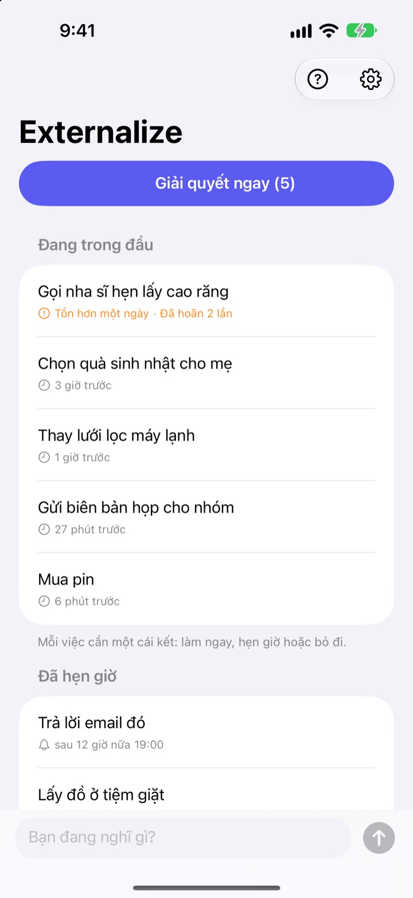
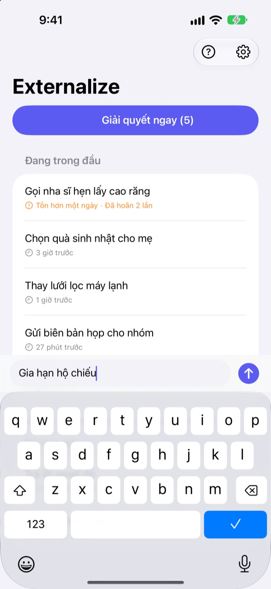
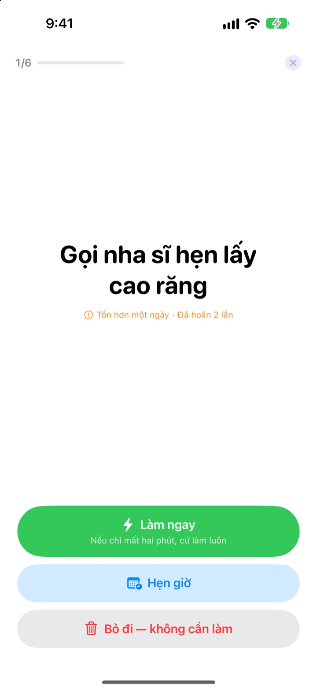
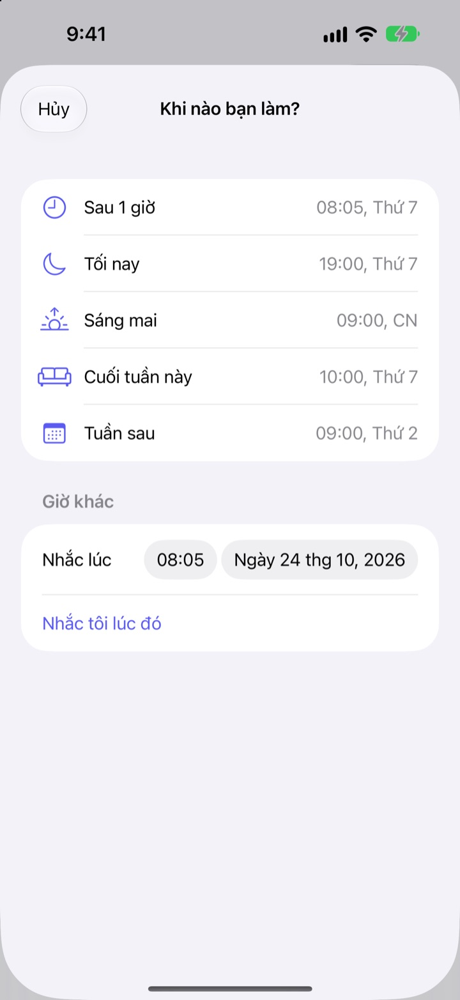

Nghĩ ra thì ghi.
Tối nay giải quyết.
“À đúng rồi, mình phải…” Ghi vài chữ để đưa nó ra khỏi đầu rồi quên đi. Buổi tối, giải quyết từng việc còn lại.
Mọi tính năng đều miễn phí. Không cần tài khoản hay đăng nhập.

Thử ngay tại đây
Gõ một việc đang lởn vởn trong đầu, hoặc chạm vào ví dụ. Rồi bấm “Giải quyết ngay” để cho từng việc một hồi kết.
Việc nhỏ đến đâu cũng chiếm chỗ trong đầu
Lúc tắm, lúc dừng đèn đỏ, lúc sắp ngủ, bỗng nhớ ra “phải làm việc đó”. Không có chỗ ghi nên bạn cố giữ trong đầu, và việc đang làm cũng mất tập trung. Ứng dụng việc cần làm lại bắt tạo danh sách, đặt hạn chót trước, nên chỉ ghi thôi cũng thành một việc.
Ghi 3 giây rồi quên đi
Mở ứng dụng là gõ ngay vào dòng nhập ở cuối màn hình. Không phải chọn danh sách, thư mục hay hạn chót.
Chạm vào tiện ích trên Màn hình khóa, ứng dụng mở ra với một dòng trống. Nói với Siri Ghi nhớ trong Externalize hoặc gán vào nút Tác vụ, là lưu xong mà không cần mở ứng dụng.

Buổi tối, giải quyết từng việc
Nếu còn việc chưa xong, bạn nhận một lời nhắc lúc 21:00. Xong hết rồi thì không nhắc.
Khi bắt đầu, từng việc hiện ra một, chữ to rõ. Chọn “Làm ngay”, “Hẹn giờ” hoặc “Bỏ đi” là sang việc kế tiếp. Việc nào chỉ mất hai phút thì bật hẹn giờ và làm luôn.

Không việc gì bị bỏ quên
Chọn “Sau 1 giờ”, “Tối nay”, “Sáng mai”, “Cuối tuần này” hoặc “Tuần sau”, việc đó sẽ quay lại đúng lúc. Ngay trong thông báo, bạn có thể bấm “Xong”, “Sáng mai” hoặc “Bỏ đi”.
Việc chờ quá một ngày và việc bị hoãn nhiều lần đều được đánh dấu, nên dễ thấy việc nào cứ bị đẩy lùi mãi.

Bắt đầu với 3 bước
- 1
Ghi lại
Vài chữ trong ứng dụng, trên tiện ích Màn hình khóa hoặc qua Siri, chỗ nào tiện thì dùng.
- 2
Cho phép thông báo
Ứng dụng hỏi một lần khi bạn ghi lần đầu. Thông báo dùng cho lời nhắc buổi tối và giờ bạn đã hẹn.
- 3
Giải quyết buổi tối
Chạm vào lời nhắc hoặc “Giải quyết ngay” và cho mỗi việc một hồi kết.
Xử lý ngay từ danh sách
- Chạm vào một việc
- chọn “Xong”, “Hẹn giờ” hoặc “Bỏ đi”
- Vuốt sang phải
- Xong (việc biến khỏi danh sách)
- Vuốt sang trái
- Bỏ đi, hoặc “Hẹn lại” để chọn giờ
- Giải quyết ngay
- lần lượt xử lý từng việc còn lại
- Ghi nhớ trong Externalize
- nói với Siri, không cần mở ứng dụng
- Cài đặt ▸ Nhắc buổi tối
- đổi giờ hoặc tắt
Khi hẹn giờ, “Tối nay” là 19:00, “Sáng mai” là 9:00, “Cuối tuần này” là 10:00 thứ Bảy và “Tuần sau” là 9:00 thứ Hai. Bạn cũng có thể tự chọn ngày giờ bất kỳ.
Câu hỏi thường gặp
Có ghi được mà không mở ứng dụng không?
Được. Nói với Siri Ghi nhớ trong Externalize, Siri sẽ hỏi bạn muốn ghi gì rồi lưu luôn. Gán phím tắt “Ghi lại” cho nút Tác vụ trong Cài đặt thì chỉ cần bấm một lần.
Thêm tiện ích vào Màn hình khóa thế nào?
Chạm và giữ Màn hình khóa, chạm Tùy chỉnh rồi chọn Màn hình khóa, chạm vào vùng tiện ích và thêm Externalize. Chạm vào tiện ích sẽ mở một dòng trống, và nó cho biết còn bao nhiêu việc. Màn hình chính cũng có tiện ích cỡ nhỏ.
Muốn đổi giờ hoặc tắt nhắc buổi tối?
Chạm biểu tượng bánh răng góc trên bên phải ▸ Nhắc buổi tối để đổi giờ hoặc tắt. Mặc định là 21:00, và những ngày không còn việc gì thì không nhắc.
Không nhận được thông báo.
Nếu phần cài đặt của Externalize báo thông báo đang tắt, hãy chạm nút ở đó để bật trong Cài đặt của iPhone. Ngày không còn việc gì thì không có nhắc buổi tối, đó là bình thường.
Việc đã hẹn giờ quay lại thế nào?
Đến giờ đã chọn bạn sẽ nhận thông báo. Chạm và giữ thông báo để chọn ngay “Xong”, “Sáng mai” hoặc “Bỏ đi”. Nếu không chọn gì, việc đó quay về “Đang trong đầu” và bạn giải quyết ở lần sau.
Việc đã bấm Xong hoặc Bỏ đi có lấy lại được không?
Không. Việc đã giải quyết sẽ biến khỏi danh sách và không có kho lưu trữ. Nếu còn phân vân, hãy hẹn giờ thay vì bỏ đi.
Đổi điện thoại thì dữ liệu có chuyển theo không?
Không. Mọi thứ chỉ lưu trên thiết bị này, không gửi lên iCloud hay máy chủ. Xóa ứng dụng thì dữ liệu cũng bị xóa.
Dùng được trên thiết bị nào?
iPhone chạy iOS 17 trở lên.
Có câu hỏi hoặc gặp lỗi? Gửi thư đến leeo@kakao.com. Ghi kèm đời iPhone và phiên bản iOS sẽ giúp chúng tôi kiểm tra nhanh hơn.